대량의 수익성 세그먼트 생성을 피하고, Profit Center와 G/L 중심으로 제조·유통·렌탈 손익을 연결했습니다.
CO Data Architecture
CO Data Design Notes
CO 프로그램은 화면 단위로 먼저 나누지 않고, 원가 데이터가 어떤 기준으로 생성되고 이동하는지부터 설계했습니다.
조직 계층, 원가요소, SKF, 배부 규칙, 비용 분할, 실제 활동단가, 차이 정산이 하나의 월말 결산 흐름 안에서 이어지도록 데이터 구조를 잡았습니다.
01Hybrid Splitting Model
제조 비용을 LABOR, MACH, OVRH 활동유형으로 분할했습니다.
동일 시간 단위 비용은 실제 작업 실적 수량으로 동적 안분하고, 단위가 맞지 않는 제조간접비는 직접 매핑 방식으로 분리해 단위 충돌을 줄였습니다.
02Hierarchy Parser
Cost Center Group과 조직 계층을 parent-child 구조로 읽어 실행 대상 Cost Center 범위를 생성했습니다.
Queue/Stack 패턴으로 하위 노드를 펼치고, 메모리 캐싱으로 반복 DB 조회를 줄이는 방향으로 설계했습니다.
03SKF Generation
EMP, SPACE, SHIP, WHRS를 핵심 통계주요지표로 정리했습니다.
인원수는 HR 공통비, 면적은 관리/공장 공통비, 출하건수는 물류 비용, 작업시간은 제조간접비 배부 기준으로 연결했습니다.
04Allocation Master
본사 공통비, 물류 허브 비용, 플랜트 관리 비용을 단계별로 하향 배부하는 구조를 설계했습니다.
Cycle과 Segment를 기준으로 송신자, 수신자, 배부 기준, 배부 원가요소가 명확히 분리되도록 구성했습니다.
05Actual Activity Price
분할된 실제 비용과 실제 조업도 수량을 연결해 월별 실제 활동단가를 산출했습니다.
이 단가는 표준원가 분석과 실제 원가 차이 판단에 사용되며, 제품 가공비의 현실성을 확인하는 기준이 됩니다.
06Variance Settlement
표준 투입액과 실제 활동원가 차이를 가격차이와 배부차이 관점으로 구분했습니다.
차이는 단순 표시값이 아니라 원가 차이 정산과 자재원장/제품 원가 분석으로 이어질 수 있는 구조로 정리했습니다.
Artifacts
System Design Assets
ERD와 전체 프로세스 맵을 먼저 잡고 프로그램 구현으로 내려갔습니다.
화면 개발보다 앞단에서 데이터 구조와 업무 흐름을 정리한 뒤 CO 프로그램의 입출력 기준을 맞췄습니다.
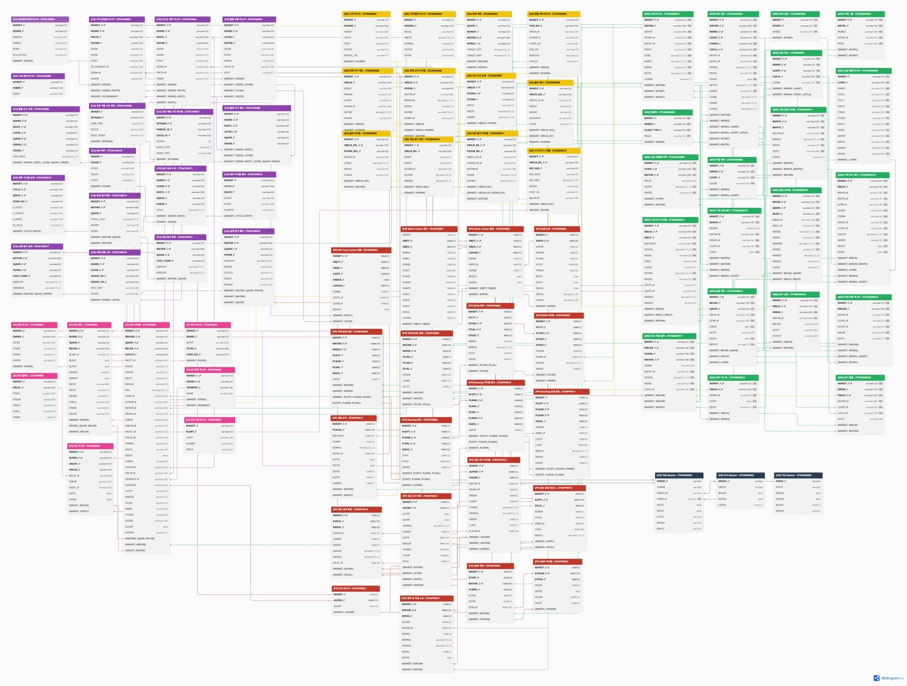
ERP 데이터 모델 ERD
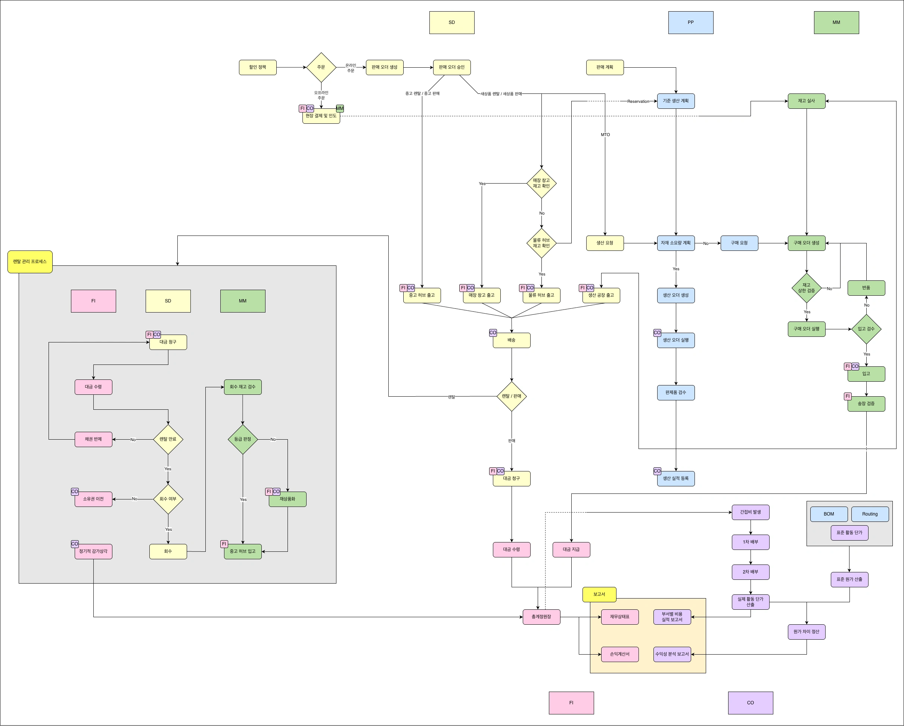
제조·판매·렌탈 프로세스 맵
Organization Design
상세 조직 구조
관리영역과 법인, 본부, 팀, 플랜트, Profit Center, Cost Center를 하나의 조직 체계로 연결했습니다.
제조, 판매, 렌탈, 물류 흐름에서 원가 오브젝트가 어느 조직 단위에 귀속되는지 확인할 수 있도록 구성했습니다.
영업·렌탈판매 조직과 렌탈사업부를 분리해 매출, 반품, 렌탈 회수 흐름을 구분
물류완제품 허브와 중고 허브를 나누어 재고 이동과 검수 기준을 분리
생산플랜트와 생산팀 단위에 Profit Center와 Cost Center를 연결
관리회계, 인사, 관리 조직을 별도 본부로 두어 공통 비용 흐름을 분리
CO Data Flow
Implemented Program Flow
01SKF 관리배부 기준 수량 입력
021차 배부간접비 배부 실행
03비용 분할활동유형별 비용 분리
04활동단가실제 조업도 기반 단가 산출
05표준원가 분석Fiori 기반 조회·분석
ABAP · ALV · Chart Engine
활동 유형별 월별 단가 조회 프로그램
Plan / Actual / Variance
노무시간, 기계시간, 제조간접비 등 활동유형별 계획 단가와 실제 단가를 월별로 비교하는 CO 대시보드입니다.
ALV 그리드와 SAP Chart Engine 라인 차트를 동기화해 연도별 단가 흐름과 variance를 한 화면에서 확인하도록 구성했습니다.
LABOR, MACH, OVRH 탭 전환으로 활동유형별 데이터 조회
실적 발생 월수 기준의 동적 연평균 단가 계산
Field Symbol 기반 MON_01~MON_12 동적 컴포넌트 처리
CDS View로 계획/실제 단가 조인 로직을 DB 레이어에 pushdown
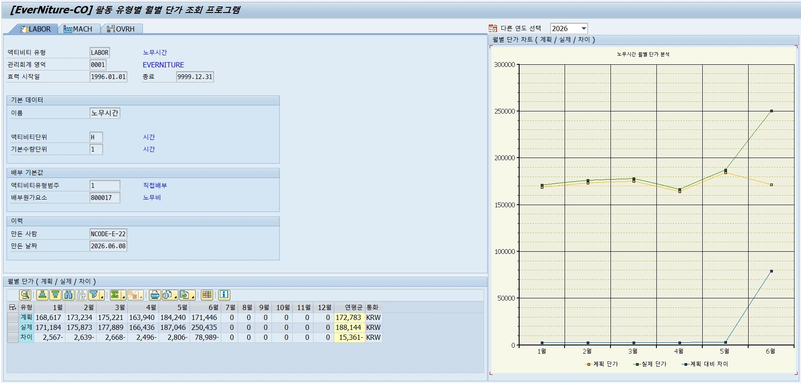
활동유형별 월별 단가 조회 및 차트
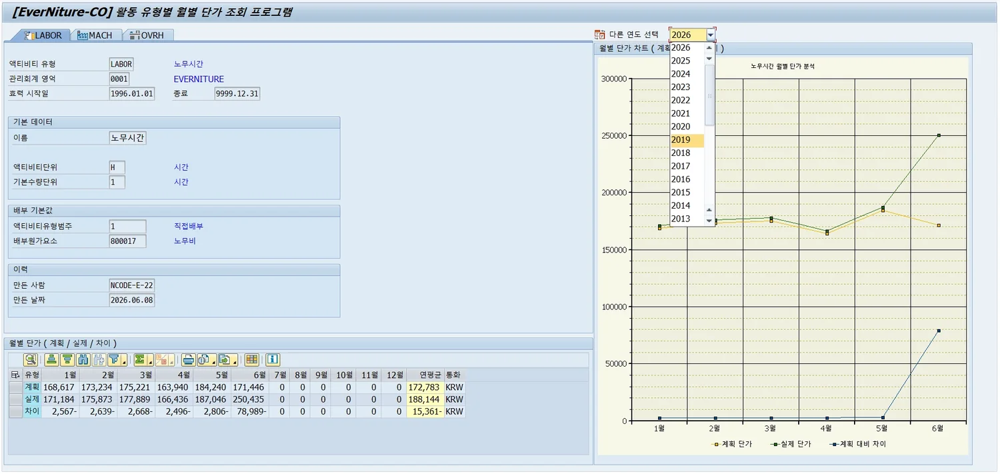
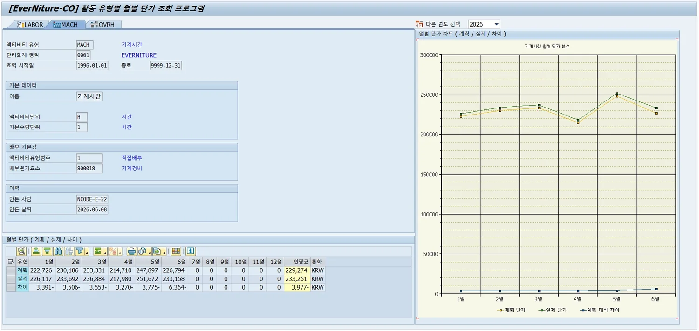
ABAP Module Pool · ALV Tree
통계주요지표 관리 프로그램
SKF Master / Actual
코스트센터별 배부 기준이 되는 사원 수, 점유 면적, 총 노동시간 등의 SKF 실적을 월별로 입력·조회하는 프로그램입니다.
코스트센터 계층을 ALV Tree로 표현하고, 입력 검증과 저장 트랜잭션을 분리해 기준 데이터의 정합성을 유지했습니다.
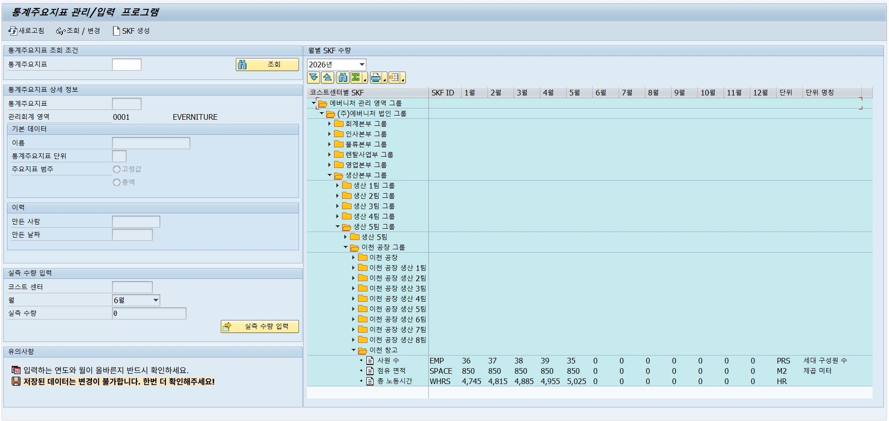
SKF 관리/입력 메인 화면
코스트센터 그룹부터 하위 코스트센터까지 재귀 로직으로 Tree Node 구성
MON_01~MON_12 월별 필드 동적 갱신
고정값과 총합값 SKF를 구분해 입력 흐름 분리
F4 Help, 필수값 검증, 중복 입력 검증, Commit/Rollback 처리
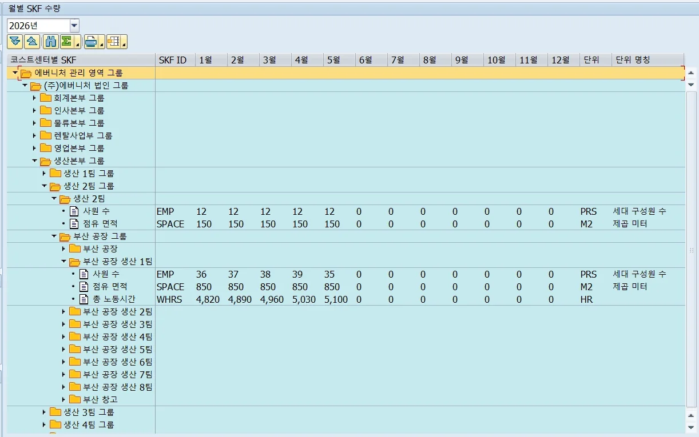
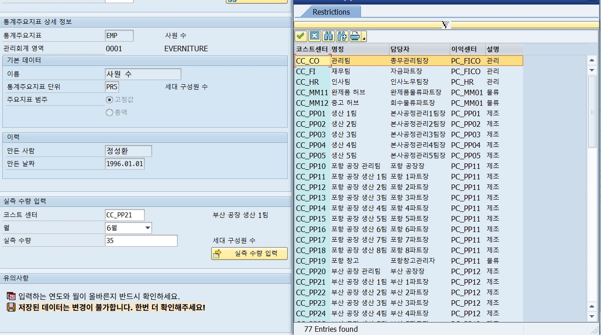
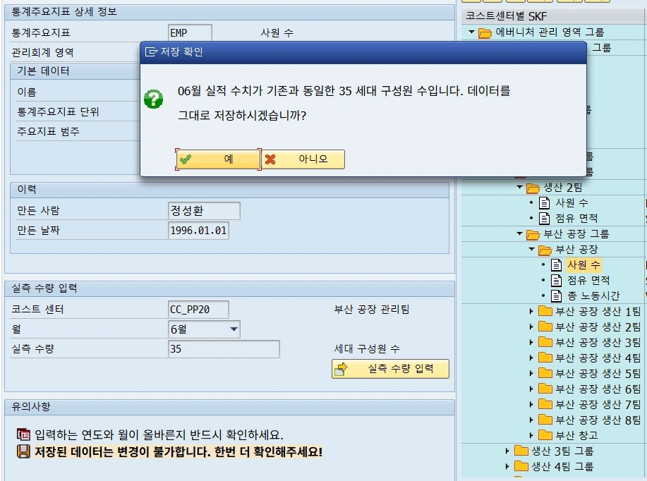
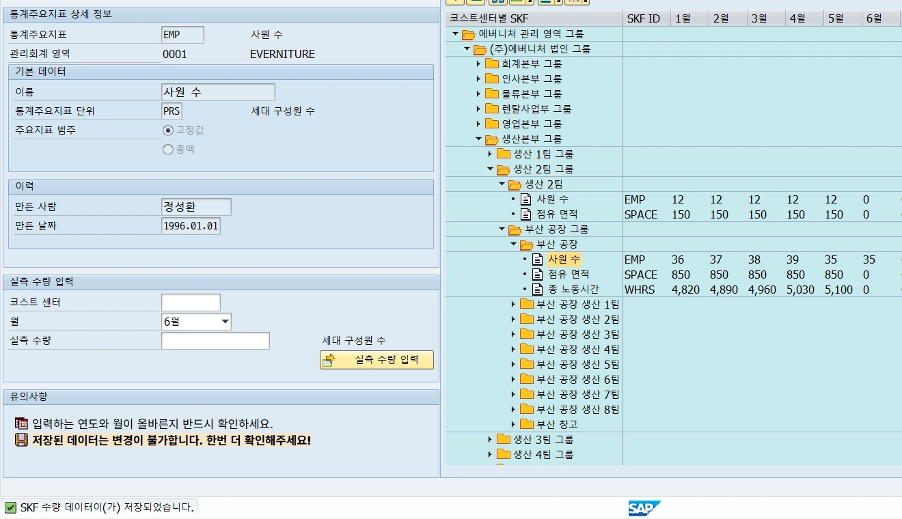
CO Allocation · Posting Control
1차 배부 실행 및 결과 조회 프로그램
Cycle / Segment
관리팀, 재무팀 등 송신 코스트센터에 쌓인 간접비를 배부 사이클과 세그먼트, SKF 비율에 따라 수신 코스트센터 또는
프로핏센터로 배부하는 프로그램입니다. 테스트 실행과 실제 전표 생성을 분리해 실행 전 결과를 검증할 수 있도록 구성했습니다.
Cycle/Segment 기반 송신·수신·배부 원가요소 구조 반영
FI 원천 비용과 CO 배부 세그먼트를 연결해 배부 대상 비용 산출
SKF 비율 기반 배부금액 계산 및 기배부액 차감
차이금액 보정 로직과 테스트/실행 모드 분리
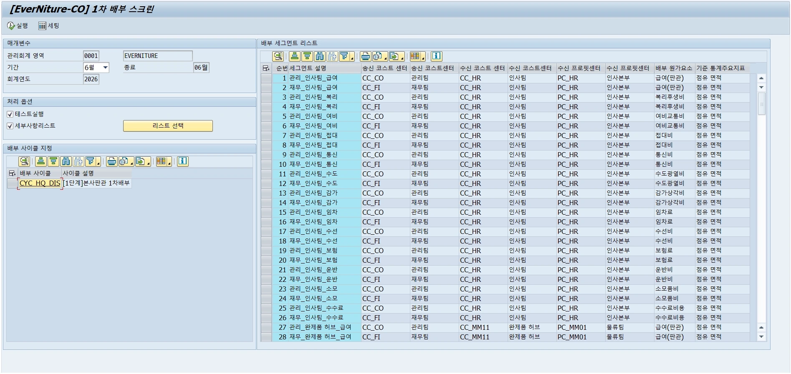
배부 사이클, 세그먼트, 송신·수신 코스트센터 기준을 확인하는 실행 화면
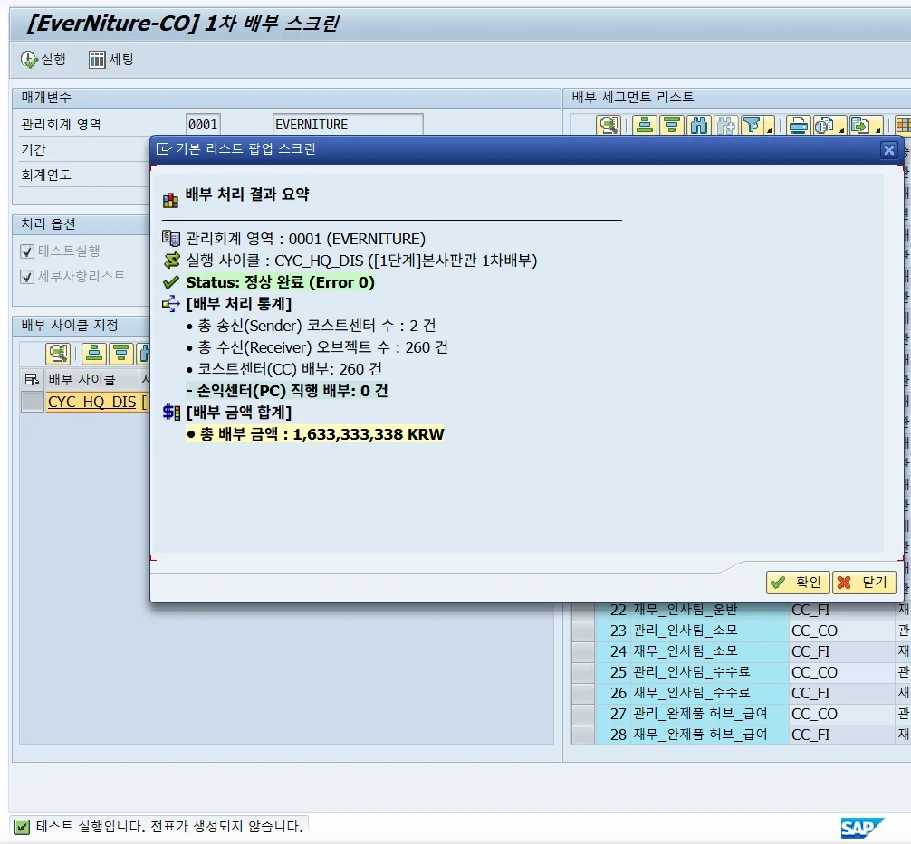
테스트 실행 결과 요약
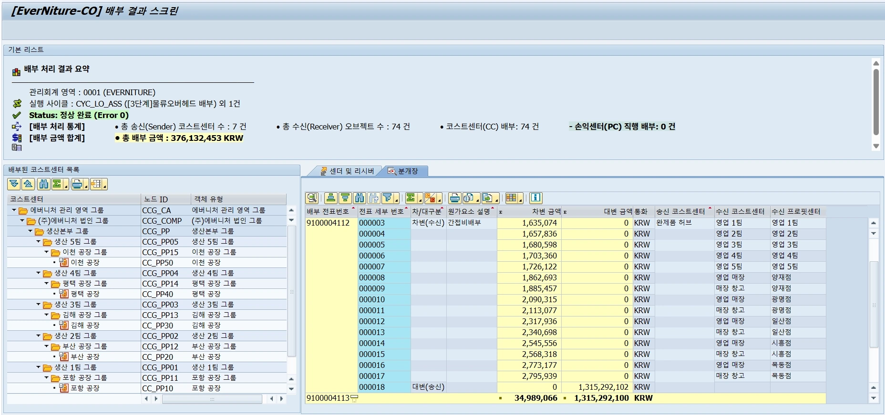
배부 처리 결과와 수신 오브젝트 집계
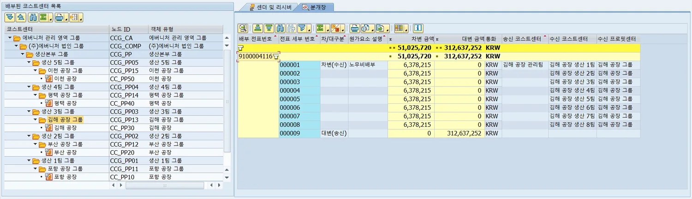
수신 코스트센터별 배부 상세 리스트
Cost Splitting · Actual Activity Rate
비용 분할 및 실제 활동단가 산출 프로그램
LABOR / MACH / OVRH
직접 제조부서 코스트센터에 집계된 제조 비용을 활동유형별로 분할하고, 실제 조업도 수량을 기준으로 실제 활동단가를 산출했습니다.
이 결과는 제품 가공비 계산과 실제 원가 분석의 기준 데이터로 이어집니다.
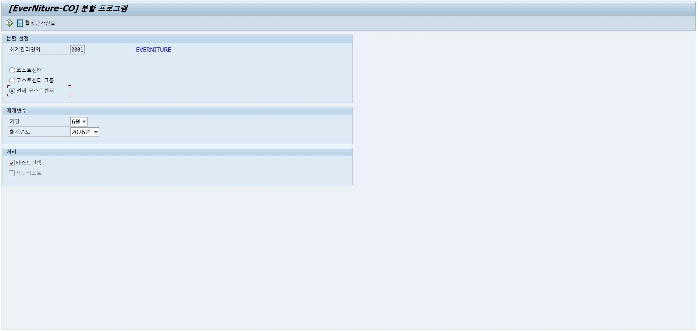
분할 범위, 기간, 테스트 실행 여부를 지정하는 실행 화면
단일, 그룹, 전체 코스트센터 범위 실행 처리
비용 데이터와 분할 규칙 마스터를 연결해 분할 기준 산출
실제 조업도 수량 기반 분할 비율 및 활동단가 계산
단수 차이 보정과 분할 전표 생성 흐름 구성
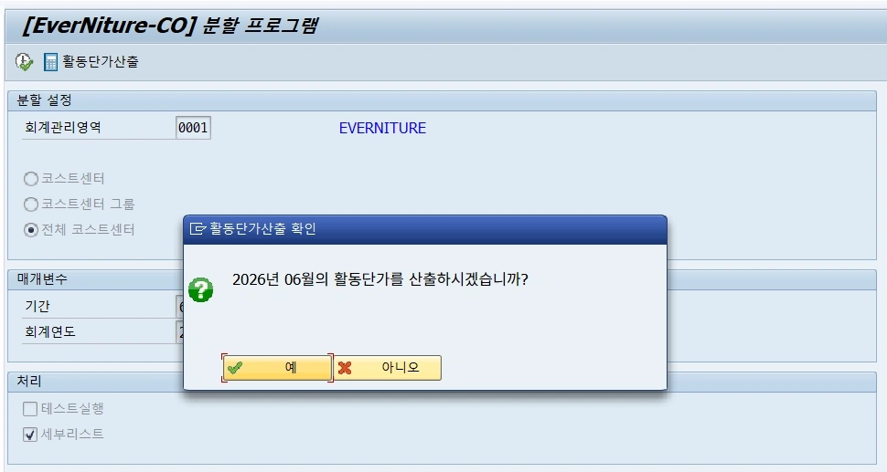
활동단가 산출 실행 확인
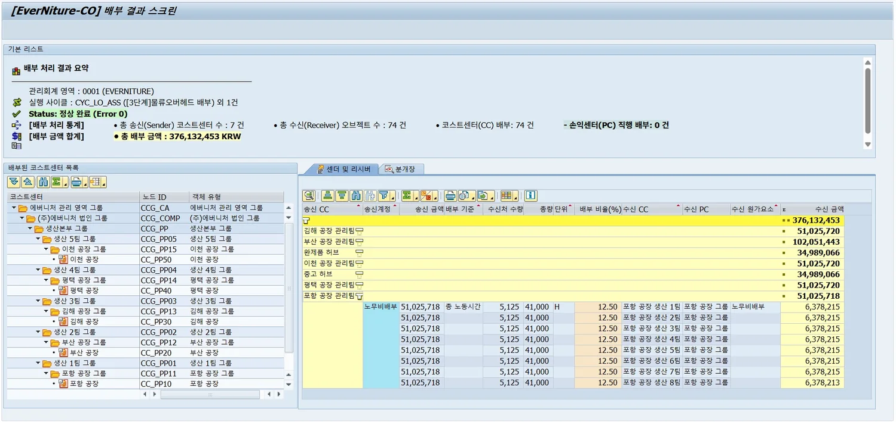
활동유형별 비용 분할 결과
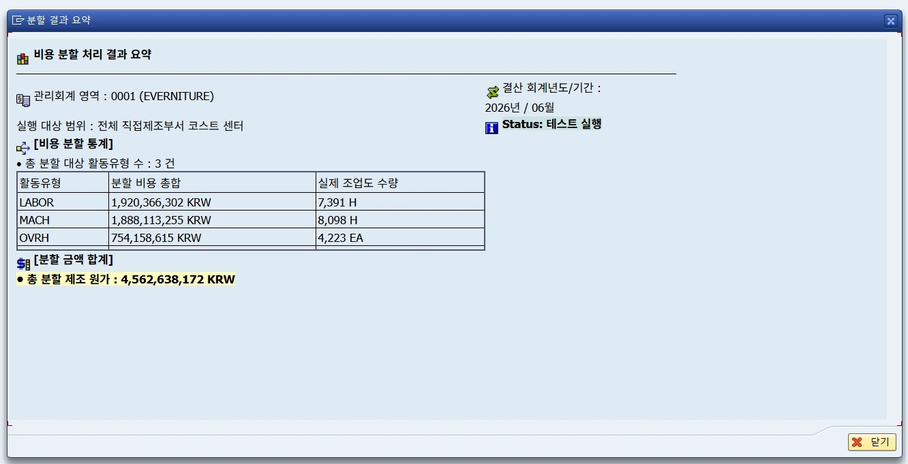
분할 전표 생성 전 미리보기
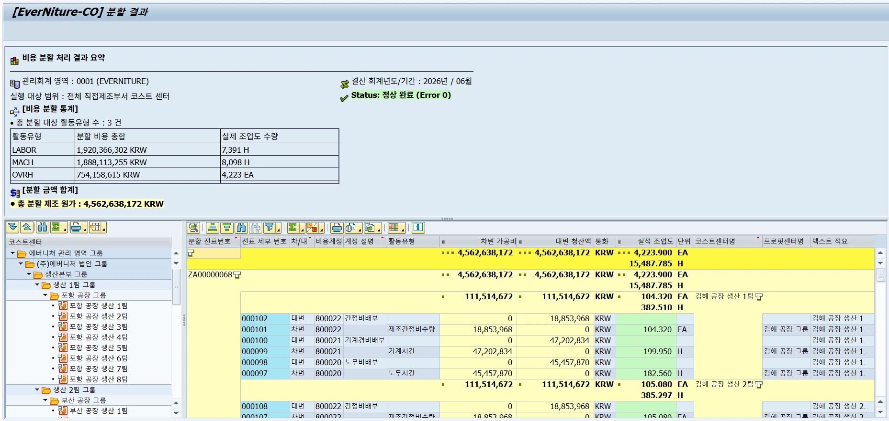
활동유형별 실제 활동단가 결과
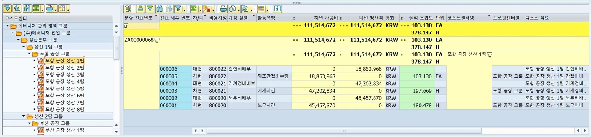
실제 조업도 기준 활동단가 산출 결과
SAPUI5 · Fiori Freestyle · OData V2
표준원가 분석 Fiori 대시보드
Standard Cost Analysis
자재별 월별 표준원가와 원가 구성요소를 조회하고, 재고·예약·BOM 구성·원가 변동 흐름을 함께 분석하는 Fiori Freestyle 화면입니다.
CO 원가 데이터와 MM 예약, SD 수주요건, PP BOM 데이터를 연결해 원가의 적정성을 판단할 수 있도록 구성했습니다.
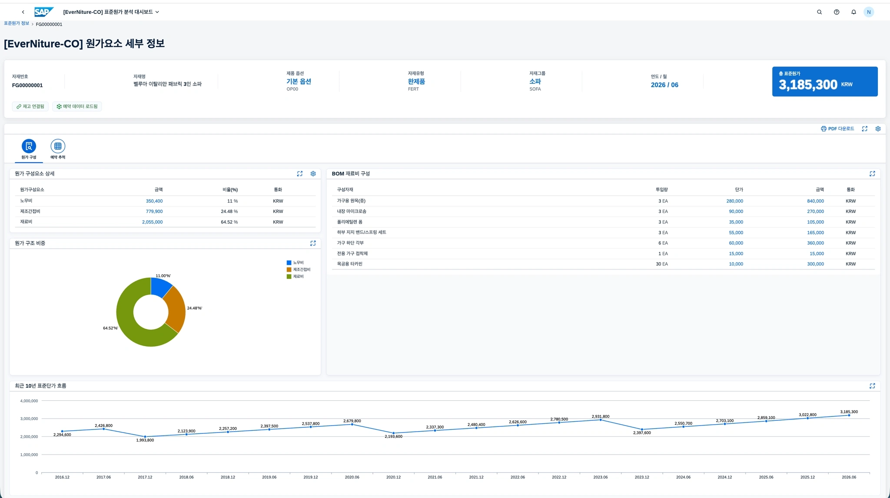
표준원가 상세 화면: 원가 구성, 재고, 예약, 히스토리 차트 통합 조회
CDS / OData Filter
연도, 월, 자재번호, 자재유형, 자재그룹 조건을 OData V2 read에 전달해 표준원가 데이터를 조회했습니다.
Master-Detail Routing
목록에서 자재를 선택하면 라우팅 파라미터로 회계연도, 월, 옵션 정보를 넘겨 상세 화면을 로드했습니다.
$expand Detail
원가 구성요소, 예약 정보, 수주요건 데이터를 Header 기준으로 함께 가져와 상세 화면을 구성했습니다.
VizFrame / Export
Donut, Line Chart와 Excel/PDF 출력까지 연결해 분석과 보고서 활용 흐름을 함께 구현했습니다.
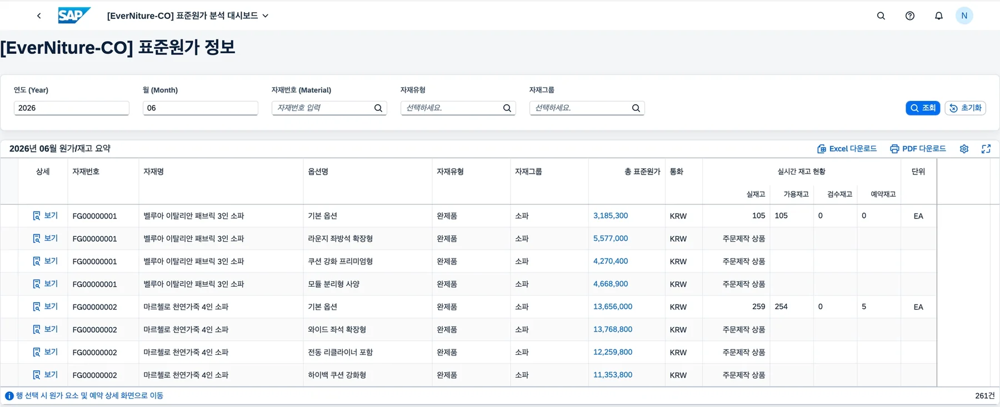
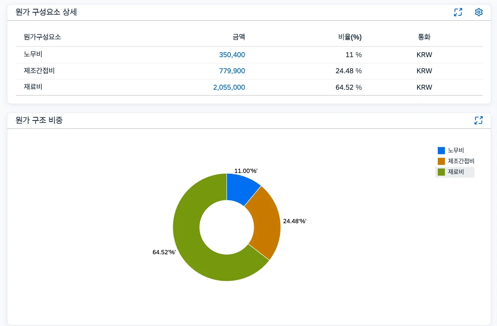
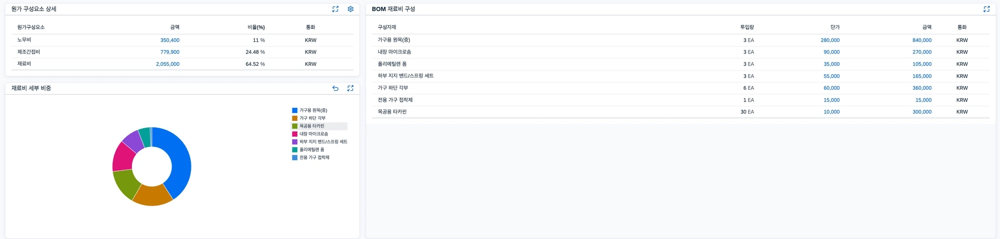
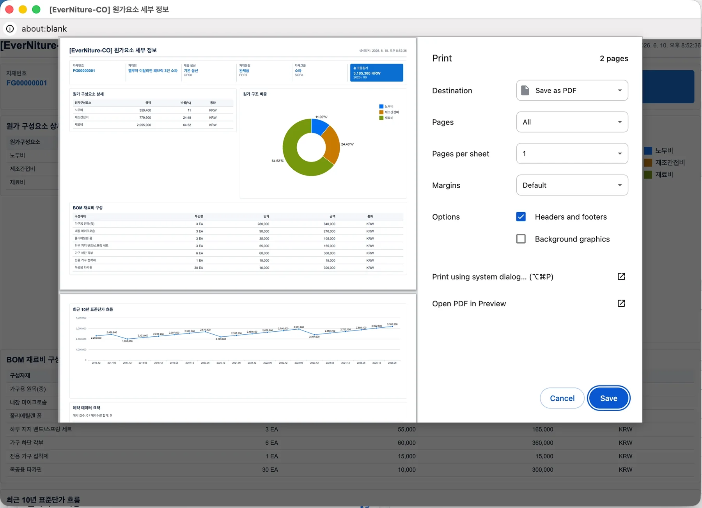
Implementation Value
CO 프로세스를 실행 가능한 시스템 흐름으로 구체화
CO 기준 데이터, 배부 기준, 실제 활동단가, 표준원가 분석 화면을 분리된 기능이 아니라 하나의 원가관리 흐름으로 연결했습니다.
SKF 입력에서 배부와 비용 분할, 실제 활동단가 산출, Fiori 기반 표준원가 분석까지 이어지도록 설계해
회계, 생산, 물류 데이터가 원가 의사결정에 사용되는 과정을 시스템 단위로 구현했습니다.